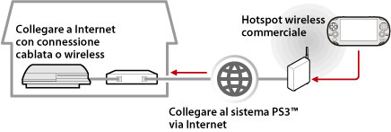

Rete > Utilizzo della riproduzione remota (tramite Internet)
Utilizzo della riproduzione remota (tramite Internet)
Per utilizzare questa funzione su un sistema PS Vita o sul sistema PSP™, potrebbe essere richiesto di aggiornare il software di sistema della PS3™ nonché il sistema PS Vita o PSP™.
Usando un dispositivo che supporta la riproduzione remota, come un sistema PS Vita o PSP™, e un punto di accesso wireless, è possibile collegarsi al sistema PS3™ tramite Internet. Per utilizzare la riproduzione remota, impostare il sistema PS3™ nella modalità di standby della connessione di riproduzione remota.

Nota
Il metodo di utilizzo di un servizio hotspot wireless commerciale (LAN wireless) e le relative tariffe variano a seconda del fornitore del servizio. Per ulteriori informazioni, rivolgersi al provider di servizi.
Preparazione (1) (del sistema PS3™ e del dispositivo che supporta la riproduzione remota)
Per utilizzare la riproduzione remota per la prima volta, è necessario registrare (operazione di pairing) il dispositivo che supporta la riproduzione remota, come ad esempio un sistema PS Vita o PSP™, con il sistema PS3™. Per registrare il sistema (pairing), selezionare  (Impostazioni) >
(Impostazioni) >  (Impostazioni di riproduzione remota) > [Registra dispositivo].
(Impostazioni di riproduzione remota) > [Registra dispositivo].
Preparazione (2) (dispositivo che supporta la riproduzione remota)
Creare una connessione di rete per collegare il sistema PS Vita o PSP™ a un punto di accesso. Per usare la riproduzione remota tramite Internet, è possibile utilizzare un punto di accesso wireless. Per ulteriori informazioni sulle impostazioni di rete di un dispositivo che supporta la riproduzione remota, consultare le istruzioni fornite insieme al dispositivo.
Utilizzo della riproduzione remota su un sistema PS Vita
1. |
Sul sistema PS3™, selezionare |
|---|
 (Rete) >
(Rete) >  (riproduzione remota).
(riproduzione remota).2. |
Sul proprio sistema PS Vita, premere |
|---|
 (Riproduzione remota PS3) > [Avvia].
(Riproduzione remota PS3) > [Avvia].3. |
Premere [Connetti via Internet]. |
|---|
Note
- Durante la riproduzione remota, se si va sulla schermata di un'applicazione diversa, la connessione di riproduzione remota viene chiusa dopo 30 secondi.
- Sul proprio sistema PS Vita, collegare l'account Sony Entertainment Network utilizzato nel sistema PS3™. Se è già stato creato un account con il sistema PS Vita o il computer, è possibile utilizzare tale account anche nel sistema PS3™.
Utilizzo della riproduzione remota su un sistema PSP™
1. |
Sul sistema PS3™, selezionare |
|---|---|
2. |
Sul sistema PSP™, selezionare |
3. |
Selezionare [Connetti via Internet]. |
4. |
Selezionare nell'elenco la connessione al punto di accesso da utilizzare per la riproduzione remota. |
5. |
Immettere l'ID e la password di accesso a Sony Entertainment Network per l'account in uso sul sistema. |
 (Riproduzione remota).
(Riproduzione remota).Utilizzo della riproduzione remota tramite Internet
La riproduzione remota tramite Internet potrebbe non essere disponibile per il dispositivo di rete in uso. In questo caso, consultare le seguenti informazioni.
- Utilizzare [Verifica della connessione Internet] in
 (Impostazioni di rete) sotto (Impostazioni) per verificare che il sistema PSP™ possa connettersi a Internet e a PSNSM.
(Impostazioni di rete) sotto (Impostazioni) per verificare che il sistema PSP™ possa connettersi a Internet e a PSNSM. - Se il router in uso supporta UPnP, abilitare la funzione UPnP del router.
- Se il router in uso non supporta UPnP, è necessario impostare l'inoltro di porta del router per consentire la comunicazione con il sistema PS3™ da Internet. Il numero di porta utilizzato dalla riproduzione remota è TCP:9293. Per ulteriori informazioni sull'impostazione di questa opzione, consultare le istruzioni del router.
- L'inoltro di porta è una funzione per l'inoltro dei segnali in arrivo su una porta specifica (entrata) ad un'altra porta specificata (uscita). Questa funzione viene denominata anche "mappatura porte" o "conversione indirizzi".
- Se il sistema PS3™ è connesso a Internet tramite due o più router, è possibile che la comunicazione non avvenga correttamente.
Note
- Un router è un dispositivo che consente a più dispositivi di condividere una singola linea Internet.
- La comunicazione può essere limitata dalle funzioni di protezione fornite dal router e dal provider di servizi Internet. Consultare le istruzioni fornite con il dispositivo di rete in uso e le informazioni fornite dal provider di servizi Internet.